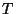

The selected CI module is integrated into NWChem but as yet no input module has been written. The input thus consists of setting the appropriate variables in the database.
It is assumed that an initial SCF/MCSCF calculation has completed, and that MO vectors are available. These will be used to perform a four-index transformation, if this has not already been performed.
This is a general spin-adapted, configuration-driven CI program which can perform arbitrary CI calculations, the only restriction being that all spin functions are present for each orbital occupation. CI wavefunctions may be specified using a simple configuration generation program, but the prime usage is intended to be in combination with perturbation correction and selection of new configurations. The second-order correction (Epstein-Nesbet) to the CI energy may be computed, and at the same time configurations that interact greater than a certain threshold with the current CI wavefunction may be chosen for inclusion in subsequent calculations. By repeating this process (typically twice is adequate) with the same threshold until no new configurations are added, the CI expansion may be made consistent with the selection threshold, enabling tentative extrapolation to the full-CI limit.
A typical sequence of calculations is as follows:
To illustrate this, below is some abbreviated output from a
calculation on water in an augmented cc-PVDZ basis set with one frozen
core orbital. The SCF was converged to high precision in  symmetry with the following input
symmetry with the following input
start h2o
geometry; symmetry c2v
O 0 0 0; H 0 1.43042809 -1.10715266
end
basis
H library aug-cc-pvdz; O library aug-cc-pvdz
end
task scf
scf; thresh 1d-8; end
The following input restarts from the SCF to perform a sequence of selected CI calculations with the specified tolerances, starting with the SCF reference.
restart h2o
set fourindex:occ_frozen 1
set selci:mode select
set "selci:selection thresholds" \
0.001 0.001 0.0001 0.0001 0.00001 0.00001 0.000001
task selci
Table 18.1 summarizes the output from each of the major
computational steps that were performed.
|
Currently, no direct control is provided over filenames. All files are prefixed with the standard file-prefix, and any files generated by all nodes are also postfixed with the processor number. Thus, for example the molecular integrals file, used only by process zero, might be called h2o.moints whereas the off-diagonal Hamiltonian matrix element file used by process number eight would be called h2o.hamil.8.
selci:moints:force set, to
force regeneration. Referenced only by process zero.
If no configuration is explicitly specified then the previous SCF/MCSCF wavefunction is used, adjusting for any orbitals frozen in the four-index transformation. The four-index transformation must have completed successfully before this can execute. Orbital configurations for use as reference functions may also be explicitly specified.
Once the default/user-input reference configurations have been determined additional reference functions may be generated by applying multiple sets of creation-annihilation operators, permitting for instance, the ready specification of complete or restricted active spaces.
Finally, a uniform level of excitation from the current set of configurations into all orbitals may be applied, enabling, for instance, the simple creation of single or single+double excitation spaces from an MCSCF reference.
A single orbital configuration or occupation is specified by
ns (socc(i),i=1,ns) (docc(i),i=1,nd)where
ns specifies the number of singly occupied orbitals,
socc() is the list of singly occupied orbitals, and
docc() is the list of doubly occupied orbitals (the
number of doubly occupied orbitals, nd, is inferred from
ns and the total number of electrons). All occupations may be
strung together and inserted into the database as a single integer
array with name "selci:conf". For example, the input
set "selci:conf" \
0 1 2 3 4 \
0 1 2 3 27 \
0 1 3 4 19 \
2 11 19 1 3 4 \
2 8 27 1 2 3 \
0 1 2 4 25 \
4 3 4 25 27 1 2 \
4 2 3 19 20 1 4 \
4 2 4 20 23 1 3
specifies the following nine orbital configurations
1(2) 2(2) 3(2) 4(2) 1(2) 2(2) 3(2) 27(2) 1(2) 3(2) 4(2) 19(2) 1(2) 3(2) 4(2) 11(1) 19(1) 1(2) 2(2) 3(2) 8(1) 27(1) 1(2) 2(2) 4(2) 25(2) 1(2) 2(2) 3(1) 4(1) 25(1) 27(1) 1(2) 2(1) 3(1) 4(2) 19(1) 20(1) 1(2) 2(1) 3(2) 4(1) 20(1) 23(1)The optional formatting of the input is just to make this arcane notation easier to read. Relatively few configurations can be currently specified in this fashion because of the input line limit of 1024 characters.
Up to 10 sets of creation-annihilation operator pairs may be specified, each set containing up to 255 pairs. This suffices to specify complete active spaces with up to ten electrons.
The number of sets is specified as follows,
set selci:ngen 4which indicates that there will be four sets. Each set is then specified as a separate integer array
set "selci:refgen 1" 5 4 6 4 5 3 6 3 set "selci:refgen 2" 5 4 6 4 5 3 6 3 set "selci:refgen 3" 5 4 6 4 5 3 6 3 set "selci:refgen 4" 5 4 6 4 5 3 6 3In the absence of friendly, input note that the names
"selci:refgen n" must be formatted with n in I2
format. Each set specifies a list of creation-annihilation operator
pairs (in that order). So for instance, in the above example each set
is the same and causes the excitations
4->5 4->6 3->5 3->6If orbitals 3 and 4 were initially doubly occupied, and orbitals 5 and 6 initially unoccupied, then the application of this set of operators four times in succession is sufficient to generate the four electron in four orbital complete active space.
The precise sequence in which operators are applied is
By default no excitation is applied to the reference configurations. If, for instance, you wanted to generate a single excitation CI space from the current configuration list, specify
set selci:exci 1Any excitation level may be applied, but since the list of configurations is explicitly generated, as is the CI Hamiltonian matrix, you will run out of disk space if you attempt to use more than a few tens of thousands of configurations.
By default, only one root is generated in the CI diagonalization or perturbation selection. The following requests that 2 roots be generated
set selci:nroot 2There is no imposed upper limit. If many roots are required, then, to minimize root skipping problems, it helps to perform an initial approximate diagonalization with several more roots than required, and then resetting this parameter once satisfied that the desired states are obtained.
By default, the CI wavefunctions are converged to a residual norm of
 which provides similar accuracy in the perturbation
corrections to the energy, and much higher accuracy in the CI
eigenvalues. This may be adjusted with
which provides similar accuracy in the perturbation
corrections to the energy, and much higher accuracy in the CI
eigenvalues. This may be adjusted with
set "selci:diag tol" 1d-3the example setting much lower precision, appropriate for the approximate diagonalization discussed in the preceding section.
When running in the selected-CI mode the program will loop through a list of selection thresholds (), performing the CI diagonalization, computing the perturbation correction, and augmenting the CI expansion with configurations that make an energy lowering to any root greater than . The list of selection thresholds is specified as follows
set "selci:selection thresholds" \
0.001 0.001 0.0001 0.0001 0.00001 0.00001 0.000001
There is no default for this parameter.
By default the program runs in "ci+davids" mode and just
determines the CI eigenvectors/values in the current configuration
space. To perform a selected-CI with perturbation correction use the
following
set selci:mode selectand remember to define the selection thresholds.
No global arrays are used inside the selected-CI, though the four-index transformation can be automatically invoked and it does use GAs. The selected CI replicates inside each process
When scanning a potential energy surface or optimizing a geometry the MO integrals need to be regenerated each time. Specify
set selci:moints:force logical .true.to accomplish this.
When computing CI+PT energy the reference configuration list is normally updated to reflect all configurations that interact more than the specified threshold. This is usually desirable. But when scanning a potential energy surface or optimizing a geometry the reference list must be kept fixed to keep the potential energy surface continuous and well defined. To do this specify
set selci:update logical .false.
The selected CI wavefunction is not invariant to orbital rotations or
to swapping two or more orbitals. Orbitals could be swapped or rotated
when the geometry is changed in a geometry optimization step. The keyword
lock has to be set in the SCF/MCSCF (vectors) input block to keep the
orbitals in the same order throughout the geometry optimization.